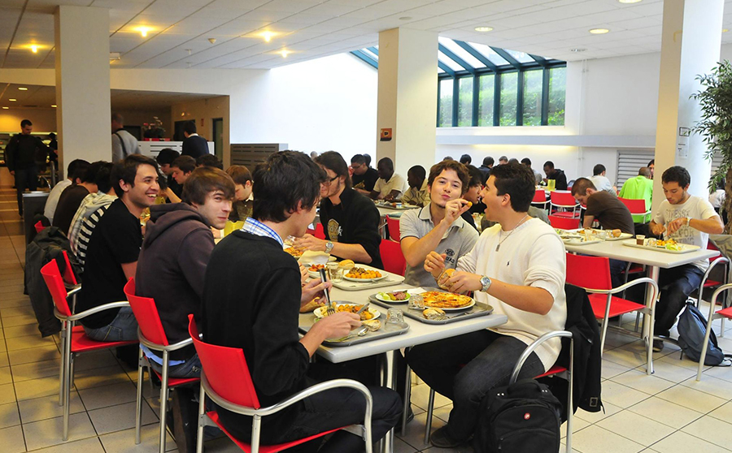

Vous retrouverez ici le menu de notre restaurant
L'Efrei Paris, anciennement École française d'électronique et d'informatique, est l'une des 204 écoles d'ingénieurs françaises accréditées au 1er septembre 2020 à délivrer un diplôme d'ingénieur. Fondée en 1936, Efrei Paris délivre le titre d'ingénieur depuis 1957. École privée sous contrat d'association avec l'État, située à Villejuif, elle est membre de la Conférence des grandes écoles (CGE) et de l'Union des grandes écoles indépendantes (UGEI).
REST'EFREI est un restaurant au sein de l'EFREI permettant aux élèves de réserver leurs places en ligne et d'éviter ainsi la queue interminable au CROUS. Cependant s'il reste des places, nous accueillons également les élèves sans réservation.
